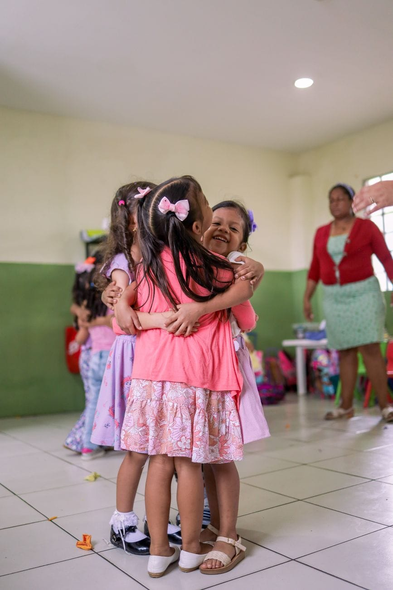
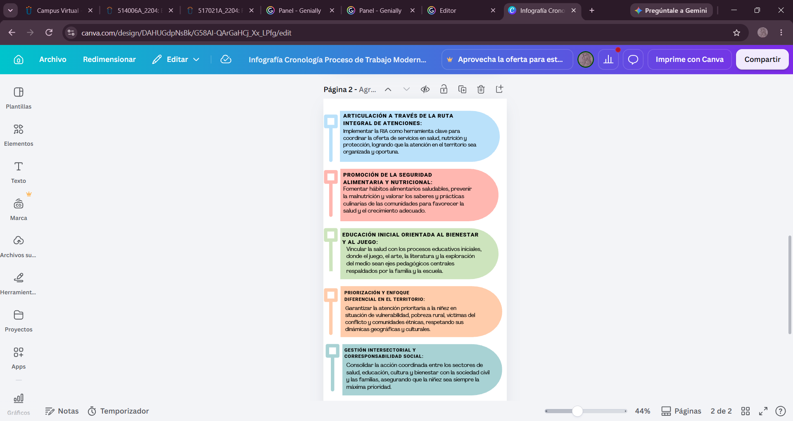
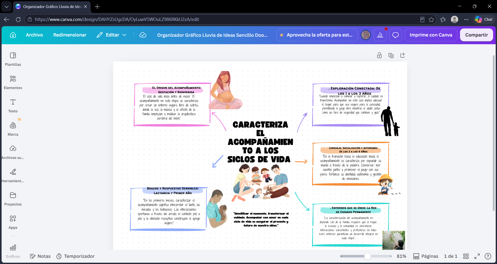
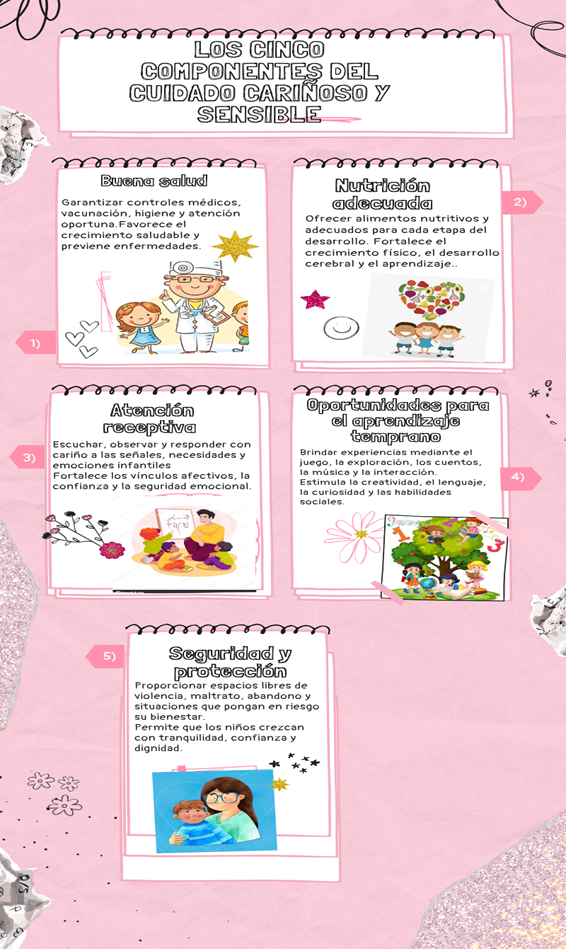

Garantizando el Derecho a la Salud en la Primera Infancia
Espacio pedagógico colaborativo que integra referentes teóricos de los Objetivos de Desarrollo Sostenible (ODS), caracterización situacional territorial en Colombia, la Ruta Integral de Atenciones (RIA) y planes estratégicos de promoción para el Buen Vivir infantil.
Ficha Secuencia Didáctica Progreso: 80% (4/5)
Identificación de los Objetivos de Desarrollo Sostenible en relación con la salud infantil
Fundamentación del derecho impostergable a la salud integral en la primera infancia y su estrecha interdependencia con el ODS 3 (Salud y Bienestar) y el ODS 4 (Educación de Calidad).

Mapa Conceptual: ODS 3 y 4
Representación visual sintetizada que articula las metas de salud neonatal e infantil, cobertura universal, nutrición y estimulación temprana como condiciones habilitantes para el aprendizaje escolar y el pleno desarrollo humano.
Análisis de Referentes Teóricos: Preguntas Orientadoras
1. La Salud como Derecho Impostergable
¿Por qué la salud debe ser asumida como derecho impostergable?
Porque es el cimiento biológico, psicológico y social que garantiza la supervivencia y el desarrollo óptimo del cerebro. No puede posponerse: las privaciones en nutrición, afecto o saneamiento durante los primeros mil días dejan secuelas irreversibles.
2. Influencia de los Entornos (Hogar, Educativo, Comunitario):
Los entornos configuran la cotidianidad infantil. Un hogar con afecto y agua potable, una escuela segura con ambientes higiénicos y una comunidad libre de violencias materializan la salud integral.

3. Rol del Pedagogo y Actores Intersectoriales
¿Cómo favorecer la salud desde la pedagogía infantil?
Como observadores privilegiados, los educadores infantiles identifican alertas tempranas en desarrollo físico y emocional, modelan prácticas de higiene lúdicas y construyen puentes de confianza con las familias.
4. Actores Institucionales e Intersectoriales:
Articulación sinérgica entre el Ministerio de Salud, ICBF, Secretarías de Educación, Empresas Promotoras de Salud (EPS/IPS) y comités comunitarios para garantizar la Ruta Integral de Atenciones (RIA) y la Ley 1804.

Exploración contextual de la atención en salud en los territorios
Diagnóstico de la atención en salud en los cuatro entornos del desarrollo infantil, estructuración de la Ruta Integral de Atenciones (RIA) y formulación del Plan de Promoción para el Recién Nacido (0 a 1 mes).
Decálogos y Piezas Comunicativas de las Autoras

Decálogo Ilustrado: Salud Infantil
Cómic educativo que aborda la lactancia materna exclusiva, higiene, afecto temprano y prevención de riesgos en el hogar.

Decálogo: Compromiso Territorial
Principios fundamentales sobre la dignidad infantil, respeto a la diversidad cultural y el acceso equitativo a servicios médicos de calidad.

Infografía: Cuidado Sensible y Entornos
Ruta secuencial que articula seguridad alimentaria, educación orientada al bienestar lúdico, enfoque diferencial y entornos afectivos.

Decálogo: Garantía y Ley 1804
Diez premisas fundamentales basadas en la Política de Estado para el Desarrollo Integral de la Primera Infancia "De Cero a Siempre".
Matrices de Salud en los Cuatro Entornos del Desarrollo
¿Cómo se favorece la salud en el Hogar?
En el hogar, la salud se favorece al garantizar una vivienda digna y segura con acceso a servicios públicos básicos (agua potable, saneamiento) y una alimentación balanceada y nutritiva. Se promueven hábitos de higiene diaria, el descanso adecuado y espacios limpios libres de vectores de contagio.
El bienestar emocional se potencia mediante pautas de crianza amorosa basadas en el buen trato, el diálogo y el juego libre, erradicando cualquier forma de castigo físico o humillante.
Espacios libres de sustancias tóxicas, enchufes protegidos y ventilación adecuada.
Lactancia materna exclusiva, horarios regulares de comidas y vínculos de confianza.
Cumplimiento puntual del esquema de vacunación y controles de desarrollo.
¿Cómo se favorece la salud en el Entorno Salud?
Se promueve brindando atención médica oportuna, cálida y sin barreras geográficas ni administrativas. Debe incluir controles periódicos de crecimiento y desarrollo integral, aplicación completa de biológicos según el esquema nacional, tamizajes visuales y auditivos, y desparasitación oportuna.
Los centros de salud deben transformarse en espacios educativos amigables para las familias, ofreciendo consejería profesional en lactancia, salud mental perinatal y detección precoz de anomalías congénitas o alteraciones en el neurodesarrollo.
¿Cómo se favorece la salud en el Entorno Educativo?
Mediante ambientes pedagógicos limpios, ventilados, inclusivos y protectores. En el aula se fortalecen hábitos diarios de lavado de manos, higiene bucal con técnicas correctas y consumo de meriendas nutritivas.
A través del juego motriz, la literatura infantil y las actividades cooperativas, las maestras estimulan el desarrollo psicomotor, la empatía y la resiliencia emocional, actuando simultáneamente como vigías activos del estado de salud de cada niño.
¿Cómo se favorece la salud en el Espacio Público?
Cuando parques, plazas, senderos y zonas verdes son seguros, limpios, arborizados y accesibles para todos los niños y niñas. La infraestructura debe contar con juegos infantiles certificados, zonas peatonales sin riesgos de tráfico y ausencia de contaminación ambiental o sonora.
El espacio público digno democratiza el derecho a la recreación, combate el sedentarismo infantil y refuerza el tejido comunitario y la cohesión social entre familias.
Ruta Integral de Atenciones (RIA): Los 5 Momentos del Curso de Vida
1. Preconcepción & 2. Gestación
Educación preconcepcional, planificación reproductiva informada, controles prenatales oportunos con micronutrientes (ácido fólico, hierro, calcio), ecografías diagnósticas y preparación integral para el parto humanizado y el inicio de la lactancia.
3. Recién Nacido hasta el Mes
Atención inmediata del parto, tamizaje neonatal auditivo y metabólico, aplicación de vacunas BCG y Hepatitis B neonatal, fomento de la lactancia materna exclusiva a libre demanda y seguimiento del vínculo afectivo y adaptación en el hogar.
4. De 1 a 3 Años & 5. De 3 a 6 Años
Valoración integral de crecimiento y desarrollo, controles odontológicos con barniz de flúor, tamizajes visuales, alimentación complementaria saludable, educación inicial de calidad y fomento de la autonomía motriz y socioemocional.
Primeros pasos, grandes cuidados
Momento / Grupo Etario: Nacimiento a primer mes (0 a 30 días) • Responsables: Valentina Tinoco Díaz y Sheril Paola Granda Rasedo
🎯 Justificación y Pertinencia
El periodo neonatal constituye la ventana más sensible para consolidar la supervivencia y sentar las bases del desarrollo cerebral. Reconocer al recién nacido como sujeto pleno de derechos exige garantizar atención en salud oportuna, afecto, nutrición exclusiva y ambientes seguros desde sus primeros días de vida.
🚨 Criterios de Urgencia y Relevancia
Cualquier alteración en este periodo (infecciones neonatales, deshidratación, falta de apego o violencia intrafamiliar) puede ocasionar secuelas neurológicas permanentes o mortalidad prevenible. Se prioriza el acompañamiento directo a las familias cuidadoras.
Estrategias Prioritarias Articuladas entre Entornos:
“Fundamentación del enfoque de salud como derecho en los territorios”
Comprensión dialéctica del acompañamiento a los ciclos de vida, el concepto ancestral y contemporáneo del Buen Vivir, diagnósticos situacionales territoriales en salud e intencionalidades pedagógicas en el aula infantil.
Organizadores Gráficos y Piezas: Acompañamiento a los Ciclos de Vida

Acompañar es Reconocer Cada Historia
El acompañamiento pedagógico exige respetar el ritmo, la cultura y las vivencias familiares de cada niño como sujeto único.

El Amor y el Juego Nutren el Cerebro
Evidencia científica sobre cómo las interacciones cálidas y el juego espontáneo consolidan la arquitectura cerebral.

Ayudar para Crecer
Acompañar sin sobreproteger ni vulnerar: brindar herramientas que fomenten la seguridad emocional y la autoeficacia.

Juntos por un Desarrollo Feliz
La protección integral no es tarea de un solo actor; requiere sinergia institucional y comunitaria continua.

Ruta Secuencial y Dialéctica de los Ciclos de Vida
Mapa mental que ilustra la progresión evolutiva, identificando hitos motores, socioafectivos y cognitivos clave para la intervención pedagógica oportuna.
Fundamentación Teórica: Acompañamiento a los Ciclos de Vida
Diagnósticos Situacionales en Salud por Territorios
Comparativa de brechas estructurales en salud materno-infantil en tres contextos territoriales colombianos (Departamento del Chocó, Bogotá D.C. y Departamento del Cesar).
Severas dificultades de acceso fluvial, dispersión geográfica y escasez de personal médico especializado en zonas rurales ribereñas.
Red hospitalaria consolidada; persiste el desafío de atención humanizada y oportunidad en citas para población migrante.
Concentración de servicios en Valledupar y brechas marcadas en corregimientos rurales e indígenas de la Serranía del Perijá.
Intencionalidades en Salud y Bienestar en el Entorno Educativo
Las intencionalidades pedagógicas constituyen los propósitos explícitos y estructurados que guían la práctica de la educadora infantil para favorecer el desarrollo integral y posicionar la salud como un derecho vivenciado cotidianamente:
Favorecer que niños y niñas conozcan su cuerpo, nombren sus partes con naturalidad y experimenten la higiene y el movimiento como fuentes de alegría y bienestar.
Integrar la alimentación sana, el lavado lúdico de manos y el descanso activo dentro de las actividades rectoras (juego, arte, literatura y exploración del medio).
Establecer aulas acogedoras donde se validen todas las emociones infantiles, se resuelvan los conflictos con el diálogo y se fortalezcan vínculos basados en el apego seguro.
Desarrollar canales de comunicación directos con las familias y centros de salud para el seguimiento continuo de esquemas de vacunación y nutrición.
“Apropiación del Plan de promoción para la primera infancia”
Apropiación del marco internacional de Cuidado Cariñoso y Sensible (UNICEF / OMS), implementación del Plan de Promoción Preescolar (3 a 6 años) con sus 5 atenciones pedagógicas completas y foro reflexivo grupal sobre el documental del Pacífico colombiano.
Marco Oficial: Cuidado Cariñoso y Sensible (UNICEF / OMS)

Los 5 Componentes del Cuidado Sensible
1. Buena salud • 2. Nutrición adecuada • 3. Atención receptiva • 4. Protección y seguridad • 5. Oportunidades para el aprendizaje temprano.

Potencialidades en el Entorno Educativo
Cómo los educadores infantiles materializan el cuidado sensible organizando ambientes enriquecidos que detonan la curiosidad y la seguridad emocional.
Plan de Promoción: “Crecer sanos y felices: estrategias pedagógicas para la promoción de la salud en la primera infancia”
Crecer sanos y felices
Ámbito: Aula de Educación Inicial y Entorno Escolar • Destinatarios: Niñas y niños en edad preescolar y sus familias.
🎯 Objetivo General
Diseñar e implementar estrategias pedagógicas fundamentadas en el juego, la literatura y la exploración que promuevan prácticas de autocuidado, estilos de vida saludables y corresponsabilidad familiar en el entorno educativo.
🎯 Objetivos Específicos
1. Fortalecer conocimientos y hábitos de higiene, salud bucal y nutrición equilibrada en niñas y niños.
2. Articular a las familias en jornadas formativas sobre crianza positiva y prevención oportuna de enfermedades.
Estructura de las 5 Atenciones Pedagógicas del Plan:
Promover el seguimiento integral del crecimiento y desarrollo mediante actividades pedagógicas dirigidas a los niños y sus familias.
• Taller lúdico "Así crezco yo": juego de roles donde los niños exploran básculas y tallímetros lúdicos y construyen su silueta.
• Encuentros de orientación con padres sobre hitos de desarrollo físico, cognitivo y comunicativo.
Desarrollar estrategias educativas sobre la importancia de la vacunación y la prevención de enfermedades mediante actividades pedagógicas dirigidas a los niños y sus familias.
• Dramatizaciones con títeres y cuentos infantiles: "Los superhéroes de la salud (las vacunas nos protegen)".
• Talleres prácticos del correcto lavado de manos antes de comer y después de jugar o usar el sanitario.
• Elaboración conjunta con las familias de la cartilla lúdica de hábitos saludables y seguimiento del carné de vacunación.
Promover el cuidado de la salud visual, auditiva y oral mediante experiencias pedagógicas interactivas.
• Actividad "Mi sonrisa brillante": macro-bocas y cepillos gigantes para modelar el cepillado correcto 3 veces al día.
• Juegos de discriminación visual y sonora para la detección lúdica y oportuna de dificultades sensoriales.
Implementar estrategias pedagógicas para fortalecer la alimentación saludable, el consumo de agua y la actividad física regular.
• Taller "El arcoíris de las frutas y verduras" y huerto pedagógico escolar.
• Circuitos de psicomotricidad lúdica y juegos tradicionales para combatir el sedentarismo infantil y el exceso de pantallas.
Fortalecer el bienestar emocional, la convivencia armónica y la protección integral mediante cuentos, expresión artística y acuerdos pedagógicos.
• Rincón de la calma y lectura guiada sobre gestión respetuosa de emociones (miedo, enojo, tristeza, alegría).
• Talleres familiares sobre crianza afectiva y erradicación total del maltrato y el castigo físico.
Foro Reflexivo Colaborativo: Video Documental
“Velo, ¡qué bonito es nacer y crecer en mi Pacífico colombiano!”
Reflexiones pedagógicas a partir del documental sobre las prácticas de crianza tradicionales, saberes ancestrales de parteras y sabedoras, cantos, arrullos, y la movilización comunitaria en los territorios del Pacífico colombiano.
"En el Pacífico la crianza es un tejido colectivo: una niña o un niño es cuidado por todo el río, por toda la vereda."
¿Cómo se puede fomentar un entorno protector y cariñoso en la primera infancia?
Se fomenta construyendo ambientes seguros donde prevalezca el respeto, el afecto y la escucha atenta. En el documental del Pacífico se evidencia que el amor comunitario y la presencia constante de los adultos son la base de la seguridad emocional del niño. La familia y la escuela deben ser refugios libres de violencia donde se validen sus expresiones y se cuide su salud integral.
¿Cómo puede la escuela apoyar a las familias y qué desafíos enfrentan las comunidades?
El entorno educativo debe respetar e incorporar los saberes de las familias (sus cantos, arrullos e historias), convirtiéndose en un espacio de diálogo permanente y no de imposición. Entre los desafíos estructurales se encuentran el aislamiento territorial, la falta de agua potable continua, las dificultades en centros de salud y la urgencia de proteger las tradiciones afrodescendientes frente al desarraigo.
Entornos protectores basados en la identidad cultural
Fomentar un entorno cariñoso implica reconocer que cada territorio tiene dinámicas y sabidurías propias de crianza. Los arrullos tradicionales, los juegos en la orilla del río y la alimentación con productos locales forman parte de la salud integral. Proteger la infancia es defender su derecho a crecer en su propia cultura con dignidad.
El docente como articulador y garante de derechos
Nuestro compromiso pedagógico va más allá de las paredes del aula: debemos ser mediadores comunitarios que dialogan con parteras, lideresas y familias. El Estado debe garantizar infraestructura digna y saneamiento en el Pacífico, sin destruir las redes solidarias ancestrales que han protegido a la niñez a lo largo de las generaciones.
La Interculturalidad como Eje del Derecho a la Salud
El análisis del documental “Velo, ¡qué bonito es nacer y crecer en mi Pacífico colombiano!” reafirma que no existe una única forma de cuidar y educar. La salud en la primera infancia no puede reducirse a parámetros clínicos estandarizados: debe contemplar la identidad cultural, la memoria territorial, los vínculos comunitarios y el respeto irrestricto por la vida.
Como futuras licenciadas en Educación Infantil, asumimos la responsabilidad ética de diseñar propuestas pedagógicas inclusivas, afectivas y profundamente humanas que celebren la diversidad y garanticen que cada niña y niño en Colombia crezca sano, amado y feliz.